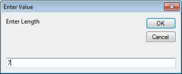
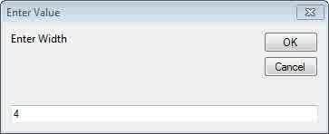
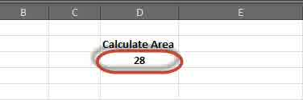
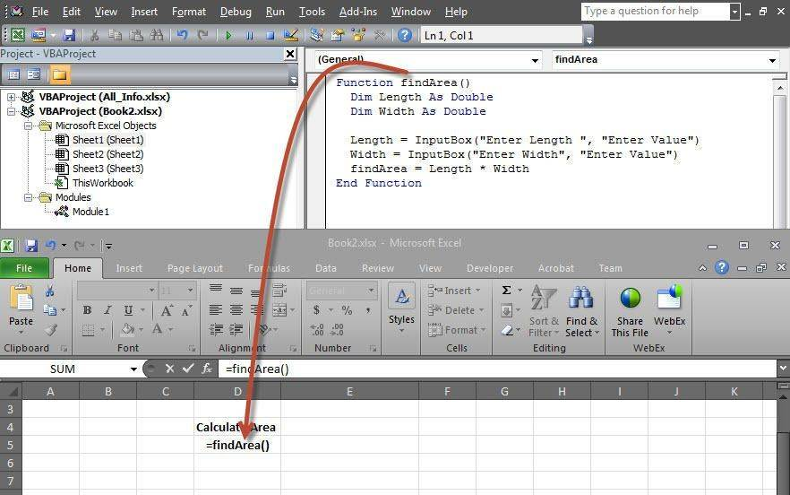
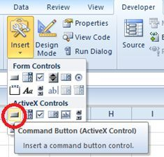
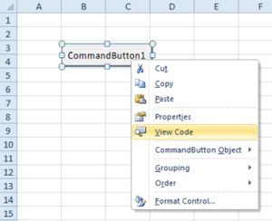
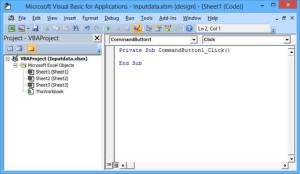
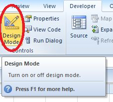
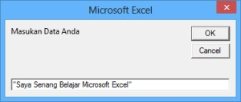
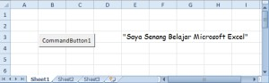

InputBox dan MsgBox
InputBox meminta pengguna mengetik sesuatu, MsgBox menampilkan pesan.
Coba langsung di browserLembar kerja mini, kuis, dan tanda selesai.
Buka versi interaktifnama = InputBox("Siapa namamu?")
MsgBox "Halo " & namaLangkah praktik
- Buat Sub baru di modul.
- Isi variabel dengan hasil InputBox.
- Tampilkan dengan MsgBox atau tulis ke sel: Range("A1").Value = nama.
- Jalankan dengan F5.
Tangkapan layar praktik
10 gambar langkah demi langkah. Klik gambar untuk membuka ukuran penuh.









